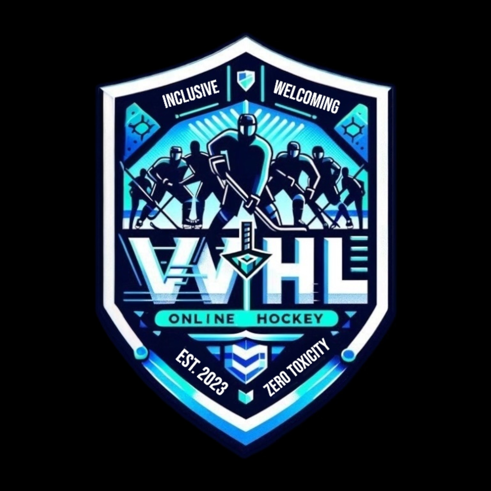

SCOUT SUMMARY
Generated from Season XI statistical results—not yet
VOD-confirmed.

SCOUTING
Search the skater and goalie database, inspect player profiles, filter by position, and send targets directly to the GM bidding board.
Playoff statistics and VOD will be kept separate from regular-season evaluation.
Pair, trio and full-line results will populate when individual game lineups are connected.
Gameplay observations will be tied to a game, situation, timestamp and clip before being marked as confirmed.